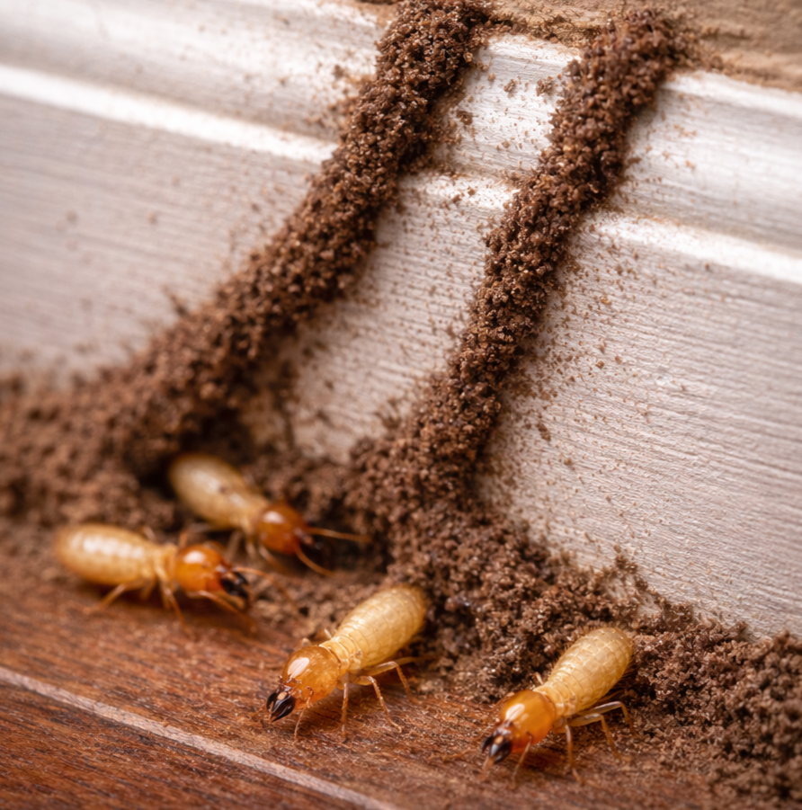

Comején Subterráneo

Descripción
El comején subterráneo es una termita que vive principalmente en el suelo,
donde forma colonias y busca humedad. Para llegar a la madera en estructuras,
construye túneles de barro (mud tubes) que le permiten moverse protegido y mantener la humedad.
Riesgos
- Daño estructural: puede debilitar madera de marcos, puertas, techos y elementos internos.
- El daño puede avanzar “por dentro” y no ser visible al inicio.
- Infestaciones sin control pueden requerir reparaciones costosas.
Señales comunes
- Túneles de barro cerca de zócalos, columnas, grietas o paredes.
- Madera que suena hueca o se siente débil al presionarla.
- Puertas o marcos que se “pegan” (por deformación).
- Presencia de alados (termitas con alas) o alas desprendidas.
¿Por qué aparecen?
- Exceso de humedad (filtraciones, drenaje deficiente, fugas).
- Madera en contacto con suelo o áreas húmedas.
- Grietas/aberturas que facilitan acceso a la estructura.
- Vegetación pegada a la estructura o acumulación de material orgánico.
Prevención
- Corregir filtraciones y controlar humedad.
- Evitar madera en contacto directo con suelo.
- Sellar grietas y puntos de entrada.
- Mantener perímetro limpio y con buen drenaje.
Control Profesional
El control del comején subterráneo requiere inspección y un plan dirigido,
porque el objetivo es interrumpir la actividad y proteger la estructura.
En Bugs Or Us PR evaluamos la situación, identificamos señales clave
y aplicamos estrategias profesionales seguras y efectivas,
priorizando siempre la seguridad de su familia, sus mascotas y el medio ambiente.
Servicio en: Bayamón, Corozal, Dorado, Manatí, Morovis, Naranjito, Toa Alta, Toa Baja, Vega Alta y Vega Baja.
Plagas relacionadas
Solicitar Servicio Profesional
← Volver al Inicio